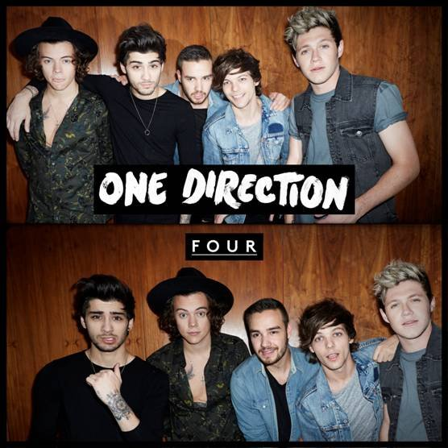
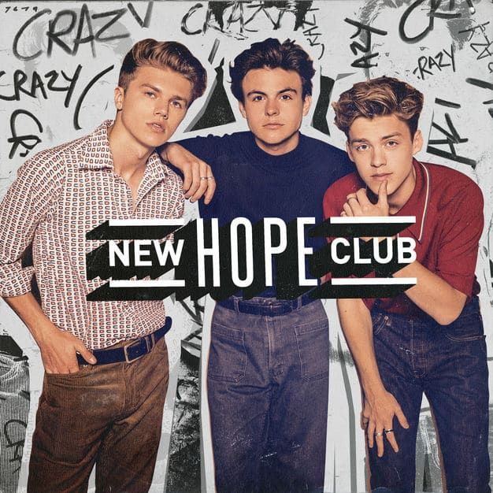

Life is full of ups and downs. I know this is a cliche, but this phrase summarizes my whole existance. Sometimes my life is fun, but sometimes my life is boring.But i believe those things make our life more colourful.
My name is Siti Wahida Shazwanie binti Hasbullah. I was born in Kota Bharu, Kelantan on 4th August 1999. I am 21 years old. I am currently further my degree study in Bachelor of Office System Management at Universiti Teknologi Mara.
As a personality, i am very easy-going person. I love to be friends with everyone. Although everyone is quite unique in their own way. I am try my best to be humble, kind ad respectful of everybody i meet regardless of theirage, gender, family backgroud, nationality or race. I am responsible and hardworking. As now, i am a student. But i have to online distace learning because of the virus of COVID-19. So, i have to stay at home because of the pandemic. Besides that, i organiz emy work well. because i at home now, i respect my parents and help them to do house works, such as doing laundries and washing dishes and other stuff. It is my responsible as me being a daughter to my parents.
> During my leisure time, i love watching netflix with my younger sister. It was fun and at the same time it makes me more bonding with my younger sister. 
I also love listening to the music especially to my favourite boy band which is One Direction. Their song is literally boost up my mood.
I am able to manage my time day by day setting out my priorities first then identifying what are the best means of complishing them. A poor planned scheduled or not having one at all is considure as failure. Multi-tasking is a good of time management for me and it is very effective to me.
I love to work in team becasue from there we will able to get a lot of new ideas from the team. We ca share our knowledge and opinion to each other. Also, we can advice to each other and also bonding to each other.